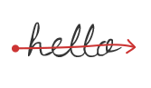

User action
Gesture
Description
Default action
Code sample

n/a
n/a

Draw a straight line from bottom to top
Draw a line from one word to the next one


The recognition process operates on a page/note content. Recognition requests can have different types like adding/removing strokes or words. That is why it is important to have a model that will build a well-formatted recognition request to deliver to the underlying recognition engine.
Besides when receiving a recognition result, the page/note model synchronization helps delivering recognition notifications for the integration code to behave properly.
In your application, you have the possibility to enable or not specific gestures by calling:
(void)setGesture:(ITCGestureType)gestureType enable:(BOOL)enabledYou can then set their behavior (is default or not) by calling the following on the ITCPageInterpreter:
(void)setGesture:(ITCGestureType)gestureType defaultProcessing:(BOOL)defaultProcessingEditing gestures are detected by the component if enabled. A set of delegates is provided so that the component can take action when some of the gestures are detected.
The Interactive Text Component supports the below gestures. Each gesture can be associated with any action. See below a list of suggested actions for each of them.
User action |
Gesture |
Description |
Default action |
Code sample |
|---|---|---|---|---|
| Single tap | |
Briefly touch a word | n/a |
n/a |
| Split | |
Draw a straight line from top to bottom | Add extra space | Add extra space |
| Join | Draw a straight line from bottom to top Draw a line from one word to the next one |
Remove extra space | Remove extra space | |
| Return | |
Draw a line from top to bottom then to the left | Hard line break | n/a |
| Strikethrough |  | Draw a line on a word | Erase | n/a |
| Scratch-out | Scratch out a word | Erase | n/a | |
| Overwrite | |
Write a letter on top of another | Overwrite | n/a |
| Underline | |
Draw a line under a word | n/a | The word is underlined. |
| Circle | Circle a word | n/a | The word can be typeset or switched with a candidate. |
The provided input ink may have been modified when receiving recognition results. This is often the case with gestures, as previously inserted strokes disappear in case of erase gesture, and strokes may be moved after a split or join gesture. Those modifications are notified so that the UI reflects the needed operations.
The component simplifies the setup and reconfiguration of the handwriting recognition engine, in case of language change for example. As explained in the API documentation, you can use a simple configuration function to add the resources and the lexicon: This will guide the recognition process in a specific direction. Here are the different configuration parameters:
locale - String representation of the handwriting recognition locale.
resources - Array of paths to handwriting resource files.
lexicon - Array of user lexicon entries. May be null.
certificate - Byte array containing the handwriting recognition certificate.
This function is non-blocking and performs configuration in the background to avoid blocking the UI thread. Listener callbacks are provided to monitor the beginning and end of the configuration process and update the UI accordingly.
There are different types of resources:
Once recognition has been performed, the recognized ink can be associated to smart UI actions. Data formats like phone numbers, contact names, etc. can be identified and highlighted as UI feedback. Besides, by selecting recognized ink, contextual menu actions can be displayed to launch a search request for example.
The typeset feature is used to represent text with a given font. There are three different possible ways to use this feature:
This is the most common use case.
You write a word that you add to the page for recognition and you receive the recognition result notification. You can then call a WordFactory method to create a typeset word. You only have to give the original ink word and the position where you want the new typeset word to be created. This call triggers the CharBoxFactory: The suggested implementation of this interface is used to compute the default size of each character box of the recognized ink word. Information such as font, size of the text, etc. is requested by the protocol suggested by this interface.
This use case is quite similar to the first one, except that the CharBoxFactory is not called to calculate the character boxes since every related info (size, position, etc.) is set as parameters.
In this use case, you can import typeset text from outside your application.
You call the WordFactory to create an array of words. You have to specify the locale of the text, the left abscissa and the baseline of words. The user parameter given is set to all characters of all words. The label is split with spaces, and the carriage return is replaced with a space as well. This call triggers the CharBoxFactory: The suggested implementation of this interface is used to compute the size of each character box of the recognized ink word. Information such as font, size of the text, etc. is requested by the protocol suggested by this interface.
The user parameters feature lets you associate any kind of meta data to a stroke or to a character.
As an example, a stroke does not take into account any kind of graphical data such as ink width or color, the pressure associated to each point captured, etc. According to your integration of the Interactive Text Component, you may need to associate this information to a stroke. Besides, in case you are using the typeset feature, you may need to associate some data (such as a font, a style like bold, italic, etc.) to a character of a word.
The user parameters feature is the way to deal with such information. It will also provide you with a convenient way to monitor the life cycle of the associated data through the different user parameters factories (stroke and word).
The simplest way to associate a user parameter to a stroke is to:
Thus, the user parameter is associated to the stroke and can be retrieved at any time all along the stroke life cycle. The content of your user parameter can be modified at any time according to your needs. You can for example change the color of the stroke and update this change in the already associated user parameter object. Even if you add the stroke to the page and request its recognition, the user parameter remains associated to the stroke.
As mentioned above, the life cycle of user parameters can be monitored through the stroke user parameter factory and the word user parameter factory. Those factories have to be implemented on your side according to your needs. There are different use cases where the factories are triggered (see below).
Let's take a very simple example of editing gestures to show you how the factories behave.
Let's say "hello" is written in one stroke (without lifting your pen or your finger from your device). Then an insertion gesture is done between the two "l". If default processing is set for the insertion gesture, the recognition engine will cut the "hello" stroke into two strokes: "hel" and "lo".
Since the split happened before the final recognition result (aka the end of recognition notification), the stroke user parameter factory is triggered through the API. Thus requesting the creation of a user parameter for a new stroke issued from an old one. In this case, the API will be triggered once for the "hel" stroke and a second time for the "lo" stroke. In default insertion gesture behavior, the "lo" part will shift to insert some space between the two resulting strokes. This will also trigger an API in the stroke user parameter factory requesting you to create a new user parameter for the shifted stroke "lo".
Each editing gesture that modifies the current stroke triggers the stroke user parameter factory. In case of typeset feature, the word user parameter factory is triggered.
In order to create a stroke or a word, you have to use the corresponding factories. When creating a stroke from a list of coordinates, the user parameter is given as parameter to the factory method. The user parameter remains associated to the stroke all along its life cycle. Almost all other factory methods do not provide such a parameter entry. The mechanism that will let you associate a new user parameter to the new stroke is the same one as described in our previous sample. Thus, when you want to create a sub stroke you will choose the appropriate method in the stroke factory. The execution of this method will trigger the stroke user parameter factory the same way as above. The same rules apply on the different factory methods available from the stroke user parameter factory.
Note that there is no stroke user parameter factory method for each stroke factory method. Indeed the background behavior of each stroke factory method can be factorized. For example, instantiating a stroke through the move, scale or transform factory methods triggers the transform callback in the stroke user parameter factory.
The word, word factory and word user parameter factory follow the same rules. The word user parameter factory is triggered for typeset word only.
Dealing with user parameters when serializing/de-serializing is essential. Note that the page, word and stroke are serializable. When calling one of these objects serialization methods, the corresponding serialization method in your implementation of the user parameter interface is triggered. Besides, the stroke user parameter factory and the word user parameter factory both have a specific method for de-serialization. Besides, each time you create a page, word or stroke from serialized data, those methods are triggered.
The Interactive Text Component supports 59 languages.